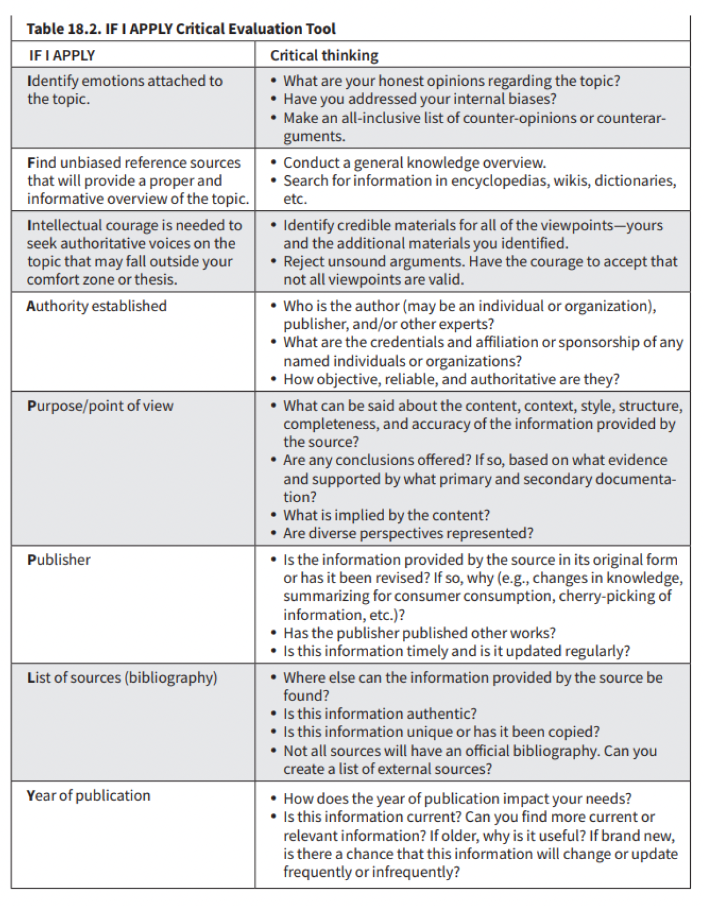

Fact Checking Methods
Studies report people no longer rely on television or print media for news. Since social media has become the dominant source of news, it has also created rampant misinformation as there are numerous fake news and misinformation articles online, correspondently, we need to know how to sieve credible and unverifiable news, and this requires critical thinking skills (Machete & Turpin, 2020, Thomas Goodnight & Goodnight, 2009). According to online disinformation 2023, the best way to identify false information is to fact-check information you find online, use fact-checking tools to see if a professional fact-checker has already debunked the story, find the source, verify the source, and check other sources for verification.
- Read past the headline
- Check what news outlet published it,
- Check the publish date and time,
- Who is the author?
- Look at what links and sources are used,
- Look out for questionable quotes and photos,
- Beware confirmation bias,
- Search if other news outlets are reporting it.
- Think before you share.
Fact checking methods for researching online
IF I APPLY
In order to best equip you with the tools you need to fact-check information online, this section will provide you with a guiding framework that will help you address biases in online information. A very successful method that allows you to identify both your own personal biases and author bias present in online information is the IF I APPLY METHOD.
IF I APPLY Methodology
Each letter of IF I APPLY represents a critical evaluation question you should ask about your information source. The first three letters (IF I) aim to help you understand your own biases better, while the last 5 letters (APPLY) help you to evaluate the credibility of the source of information.
- IF I steps are personal questions
- APPLY steps are questions about the source
PRO TIP: Not every single question may apply to your source of information you are evaluating, these questions are guidelines, so use which questions make the most sense for your situation.
Use the link bewlow to download Handbook
DOWNLOAD